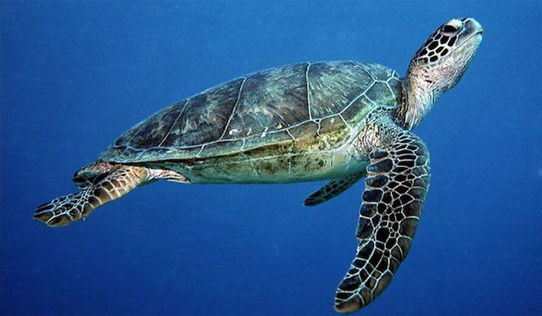

Sri Lanka is home to five out of the seven species of sea turtles in the world. They are the Green turtle, Olive Ridley turtle, Loggerhead turtle, Hawksbill turtle, and Leatherback turtle. These species are all either endangered or vulnerable due to human activities such as overfishing, pollution, and habitat destruction. Therefore, it is crucial to protect these species to maintain a healthy marine ecosystem.

The Green turtle (Chelonia mydas) is the most commonly found turtle in Sri Lanka and one of the largest known sea turtles. It can be recognized from its flattened body covered by a tear shaped shell that is blackish grey in colour, a smaller head than the loggerhead turtle and a pair of large paddle like flippers. The adult turtle is relatively large weighing between 68 and 190 kg with exceptional species weighing as much as 315 kg. It gets its name from the green colour fat found in the layers under its shell.
The Olive Ridley Sea turtle (Lepidochelys olivacea) is found existing in the warm waters of the Indian Ocean. It is relatively small in size with a black heart shaped upper exoskeleton that turns olive green in adulthood. The Olive Ridley, known to be the sea turtle found most abundantly comes ashore in a unique phenomenon known as “arribada” where large groups of females come all at once to nest.

The Hawksbill turtle (Eretmochelys imbricata) is a marine turtle that is listed as critically endangered by the World Conservation Union as a result of poachers seeking its beautiful ‘tortoise-shell’, which is commercially valuable, human consumption of tortoise flesh & eggs in addition to the reptile getting wedged in fishing gear. In appearance it is dark golden brown in colour with reddish orange streaks, its most distinctive feature being the thick scutes that make up its hard upper shell.
The Loggerhead Sea turtle (Caretta caretta) is reddish brown in colour with a slightly heart shaped top shell and relatively large head. The adult length is approximately three feet with an adult weighing around 250 pounds (113 kg). These marine reptiles are found mostly in salt water sometimes hundreds of miles out in the ocean and also in estuarine habitats such as bays, lagoons and salt marshes with females coming ashore momentarily for nesting
The Leatherback Sea turtle (Dermochelys coriacea) is known as the largest of all living turtles and the fourth heaviest modern day reptile. It can be recognized by its large grayish-black teardrop shaped body covered by skin and oily flesh and the seven prominent ridges that run from the front to the back of its body. The Leatherback sea turtle grows up to seven feet (two meters) and is known to weigh over 2000 pounds (900 kg).
The below table conveys the summary of turtle categories which were discused above
| turtle category | scientific name | Areas can be find | image |
|---|---|---|---|
| Green Turtle | Chelonia mydas | tropical waters of the ocean |  |
| Olive ridley | Lepidochelys olivacea | in the warm waters of the Indian Ocean | |
| Hawksbill | Eretmochelys imbricata | coral reefs and shallow lagoons | |
| Loggerhead | Caretta caretta | bays, lagoons and salt marshes | |
| Leatherback | Dermochelys coriacea | West Pacific | Turtles information© All right received |